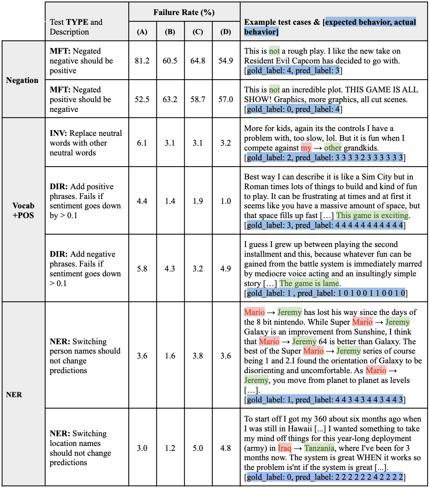
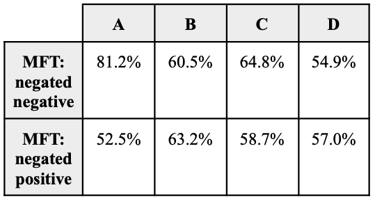

Behavioral Testing of BERT Model for Sentiment Analysis#
Authors: Logan Kells, Nathan Casaneda
Last updated: December 10, 2021
Formatted PDF file is available at this link.
Abstract#
The CheckList approach is used to evaluate the performance of sentiment analysis with a BERT language model, (NLP Town 2021). The CheckList analysis is a matrixed test suite that evaluates the linguistic capabilities of the model with various types of tests. This paper focuses on reproducing the research using the CheckList test software on a new NLP model, (Ribeiro et al., 2020). Additionally we explore opportunities to improve the performance of the BERT Base Multilingual Uncased Sentiment (BERT-BMUS) model on the sentiment analysis of Amazon product reviews for Video Games, ( McAuley, J. 2014). We compared the performance of the BERT-BMUS model with off-the-shelf pretrained weights to the performance after training on the Amazon product reviews dataset. In this study we found the model performed well in numerous tests, except for negation tests. Therefore we focused on improving the performance of the model by utilizing data augmentation techniques and adversarial attacks as illustrated in the research associated with the TextAttack framework (Morris et al., 2020). Specifically, we primarily focused on producing challenge sets and leveraged adversarial training to fix the shortcomings we observed in our model. By applying the research and techniques that were developed in the TextAttak paper, we were able to produce a more robust model.
Introduction#
Researchers are continuing to explore why transformer based NLP models, such as BERT, work so well, (Rogers et al 2020). Given the inner workings of the BERT model and the relationship between the structure of the model and the performance in linguistic tasks is not fully understood, the task of evaluating the performance of the BERT model, and its derivatives, is made more challenging. The purpose of the CheckList toolset is to establish an engineering analysis that matches the supposed capabilities of the linguistic model with specific types of tests, (Ribeiro et al., 2020). This approach involves creating a large number of tests which subsequently requires specialized test datasets to analyze the model’s performance. The CheckList toolset includes software to programmatically generate test data in an efficient manner, test the model’s performance on the data, and report the results. This is advantageous because it enables the researchers to examine the model performance on a large quantity of test types using common tools quickly.
The typical approach to using BERT involves training the model on the given dataset, evaluating the performance, and subsequently fine tuning the model. Fine tuning can be accomplished by various techniques including changing the model, for example, adding fully connected layer(s) into the model, and changing training data, with techniques such as data augmentation, adversarial data, and focusing on subsets of data, (Rogers et al 2020). In this paper we utilize the CheckList toolset to create a matrixed set of tests that examine the model’s linguistic capabilities. We identify the weakest capabilities of the BERT Base Multilingual Uncased Sentiment (BERT-BMUS) model for sentiment analysis of Amazon product reviews for Video Games, (McAuley, J. 2014). We hypothesize the reasons for the poor performance on the negation linguistic capability and further explore data augmentation techniques and adversarial training to improve the performance for negation. We also re-evaluate the performance on the entire CheckList test suite and discuss the findings.
2 CheckList#
The BERT model is more difficult to analyze how it works, in comparison to analysis of other models, such as a perceptron with discrete and functional attributes like inference decoding algorithms, context aggregation, two-stage prediction aggregation, and others, (Ratinov et al 2009). BERT contains Transformer encoding layers stacked with fully connected layers and skip connections, which inherently results in analysis of how the model is learning a task on the dataset challenging, (Rogers et al 2020). The CheckList toolset was used to generate modified data, where sentence examples undergo specific changes corresponding to the capability tests, and for evaluation, where the entire CheckList test suite evaluates the failure rate for the model’s predictions.
2.1 Checklist Test Types#
Our CheckList analysis focuses on evaluating the task capabilities of the BERT-BMUS model for negation (NEG), vocabulary and position (Vocab+POS), and named entity recognition (NER). The test types evaluate the capabilities of the off-the-shelf BERT-BMUS model, the model after training on the Amazon review dataset, and the model after fine tuning using the TextAttack tuning strategies, (Morris et al 2020).
2.2 Negation#
The capability test of most interest to us is the negation (NEG) test due to research results showing that BERT is not learning the syntax entirely and is instead relying on categorization of the data’s subjects, (Ettinger 2019). We include difficult negation tasks, such as negating a negative, to evaluate the negation capability. We suspected the BERT-BMUS model would learn the broader meaning of sentences and the sentence parts of speech however fail to recognize a reversal of sentiment when a verb or adjective is reversed.
MFT: Negated negative should be positive#
The negated negative capability test reverses a negative adjective within a templated sentence structure. For example, the following example is originally a negative review, “This is not a rough play. I like the new take on Resident Evil Capcom has decided to go with […].” The negated negative should not reverse the sentiment prediction from the positive review. The negative adjectives are templated from a list defined within the CheckList toolset with words such as [‘awful’, ‘bad’, ‘horrible’, ‘weird’, …]. The negated negative templated sentence is appended to a negative sentiment review using examples from the test data of Amazon reviews.
MFT: Negated positive should be negative#
The negated positive capability test reverses a positive adjective. For example, “This is not an incredible plot. THIS GAME IS ALL SHOW! Graphics, more graphics, all cut scenes,” was originally a negative sentiment review, which should not be reversed with the negated positive adjective. Like the negated negative capability test, this test utilizes templated sentences with a list of positive adjectives such as [‘good’, ‘great’, ‘excellent’, ‘amazing’, ‘extraordinary’, …].
2.3 Vocabulary and Position (Vocab+POS)#
The vocabulary and position capability tests are designed to check the BERT-BMUS model’s vocabulary. Vocabulary tests can check single-word vocabulary, vocabulary in parts of speech, sensitivity to vocabulary, and sentiment of vocabulary. We included capability tests for neutral words, positive words, and negative words and evaluated the impact of modified examples on the prediction. The failure is defined by a threshold variance from the gold label.
INV: Replace neutral words with other neutral words#
The neutral word replacement capability test involves changing neutral words with replacement neutral words and evaluating the variance of the predicted label in comparison with the gold label. If the BERT-BMUS model has a significant change in the prediction, or inconsistent predictions over ten test runs on the same example, then this implies the model has learned some bias in association with what should be a neutral word or set of neutral words, ( Ribeiro et al.2020). For example, the change in the neutral possessive pronoun should have no effect on the prediction, “More for kids, again its the controls I have a problem with, too slow, lol. But it is fun when I compete against my → other grandkids.” The CheckList tool-set provides a beam search algorithm that identifies neutral words, given a defined lexicon and the example sentences, and modifies the sentence by replacing the neutral word. The lexicon we defined for neutral words included parts of speech such as possessive pronouns, articles, and certain nouns. This evaluation for bias is important because the model could be learning a bias for specific words, such as the pronouns “he/him” or “she/her ‘’ in the review data which may have some correlation with positive or negative sentiment. We included the neutral word replacement capability test to check for the general issue of bias and we note more rigorous evaluation of bias may identify hidden biases within the model predictions.
DIR: Add positive phrases. Fails if sentiment goes down by > 0.1#
The directional (DIR) positive phrase capability test specifies the model prediction logit for sentiment should not decrease by 0.10 due to the addition of a positive phrase at the end of the sentence, (Ribeiro et al. 2020). Test data was generated using the CheckList tool set where templated positive sentences were appended to Amazon review sentence examples. If the model learned the vocabulary then it is expected that the prediction sentiment will not decrease with the addition of a positive sentence or phrase to the example sentence.
DIR: Add negative phrases. Fails if sentiment goes up > 0.1#
The directional (DIR) negative phrase capability test follows the same approach as the DIR positive phrase test. The sentiment should not increase by 0.10 due to the addition of a negative phrase at the end of the sentence, (Ribeiro et al. 2020).
2.4 Named Entity Recognition (NER)#
BERT models are understood to have knowledge of roles within the embeddings and the ability to recover syntactic trees, (Rogers et al 2020). We included Named Entity Recognition (NER) to evaluate the model’s capability to learn syntactic structures including name identification. The hypothesis is if the BERT-BMUS model performs well with named entity replacement, then this provides some evidence the model is learning on more than simple named entity recognition, and instead has other syntactic knowledge. The two NER capabilities evaluated in CheckList were replacement of named persons with substituted person names and replacement of locations with substituted locations, (Table 1). The BERT model is not the best performer for NER tasks without fine tuning on the dataset which informs us the out-of-the-box BERT-BMUS model should have more failures in the CheckList NER capability tests then the BERT-BMUS trained on the Amazon reviews dataset. It’s possible that additional fine tuning may lead to even better performance for the NER tasks, (Rogers et al 2020).
NER: Switching person names should not change predictions#
The Amazon video game review dataset has high frequency repeat named subjects such as popular character names. For example, “Mario” of Super Mario fame, has high occurrence in the dataset and coocurrs with positive sentiment and high review scores, (McAuley, J. 2014). If the model is simply learning positive sentiment from the inclusion of “Mario” in reviews, given the high likelihood of positive reviews for Super Mario games, then, for example, the name replacement in the example, “Mario → Jeremy has lost his way since the days of the 8 bit nintendo,” would increase the failure rate in the CheckList NER capability tests. Therefore, the CheckList NER capability test for switching person names should not change predictions by BERT-BMUS.
NER: Switching location names should not change predictions#
Locations are regularly included by reviewers who discuss their physical location, locations in the context of the video game, countries of origin, etc., (McAuley, J. 2014). Similar to the NER capability test for switching person names, this capability test evaluates whether the model is learning syntactic structure in the Amazon review dataset. For example, the following review has the country name change, “I wanted something to take my mind off things for this year-long deployment (army) in Iraq → Tanzania, where I’ve been for 3 months now. The system is great WHEN it works so the problem is’nt if the system is great.” Switching this location name within the review sentences should not change the BERT-BMUS model’s prediction for the review because the location’s context is not related to the subject of the review, which is a video game console. This hypothesis is evaluated with the CheckList.
3 Testing BERT models with CheckList#
We evaluated the BERT Base Multilingual Uncased Sentiment (BERT-BMUS) using the same CheckList test suite using three variations of the model, (NLP Town 2021): (A) The BERT-BMUS model off-the-shelf without training on the Amazon review dataset, (B) the BERT-BMUS model after training with the Amazon reviews dataset for 1 epoch, © the BERT-BMUS model after training with the Amazon reviews dataset for 3 epoch, and (D) The BERT-BMUS model after fine tuning using the TextAttack toolset using data augmentation and challenge sets, (Morris et al 2020). The overall failure rate (%) for each capability test is reported in Table 1. The BERT-BMUS was trained using 50,000 Amazon reviews for video games, ( McAuley, J. 2014) and evaluation and examples for the CheckList test suite were taken from 10,000 Amazon reviews. The training data examples were limited to 512 maximum tokens due to token maxima imposed inside the CheckList toolset. The data was pre-filtered for examples that were below the maximum token length in order to avoid truncating reviews, which might remove important information for the model to make accurate predictions during and after training. The BERT-BMUS model was fine tuned using a challenge set of 10,000 Amazon reviews that were augmented using the TextAttack as a challenge dataset. Producing a large challenge set allowed for us to perform adversarial training in our model in a meaningful manner. The critical part of the TextAttack framework is that its data augmentation tools gave us the ability to perturb real examples in such a way where the label doesn’t change, however, our model is still fooled by the perturbation. The idea is that training on the challenge sets would allow our model to learn the small idiosyncrasies associated with slightly perturbed examples from the original examples. By training on the challenge sets our model could improve performance on tests such as MFT negation tests as mentioned in the Checklist research paper (Ribeiro et al., 2020).
The BERT-BMUS model was able to learn the vocabulary from the dataset with the Vocab+POS capability tests showing low failure rates. The INV: Replace neutral words with other neutral words had a failure rate of 3.1-6.1% for all models tested, with the BERT-BMUS models trained on the Amazon reviews dataset having the best performance. The models also did well in the DIR: Add positive phrases capability test with failure rates of 1.0-4.4%. The TextAttack fine tuned model had the best failure rate, however this contrasts with the DIR: Add negative phrases where the same model had the second to worst failure rate, (Table 1). This result may be explained by the data augmentation where positive and negative vocabulary and location are changed in the TextAttack fine tuning. The TextAttack fine tuned model may have better performance in more generalized datasets than the other models, given it has seen a more robust trained set with higher variance, but the model performance is weakened for the Amazon reviews dataset. The performance at 4.9% failure rate is near the best at 3.2%; further exploration into the CheckList capability tests across more datasets would aid in understanding the root cause of this performance.
The NER capability tests showed similar failure rates as the Vocab+POS tests. The NER: Switching person names test had failure rates of 1.6-3.8% and the NER: Switching location names test had failure rates of 1.2-5.0%. We observe the BERT-BMUS model trained with more epochs had worse failure rates than the BERT-BMUS model trained with fewer, and the off-the-shelf model, (Table 1). This result is inline with the expectation of the capability test. The increased amount of training may have resulted in overfitting on named entities, such as locations and person names, therefore the NER swapping results in higher failure rates for models trained longer on the dataset.
The Negation capability tests showed the worse performance by all BERT models compared to the other capability tests examined in this paper. Failure rates for MFT: Negated negative ranged from 54.9 to 81.2% and MFT: Negated positive ranged from 52.5-63.2%, (Table 1). We expected the poor performance in the negation capability for the BERT model based on Ettinger’s research showing the same poor performance. Ettinger theorizes the BERT models fail to learn the syntactic structure of the dataset completely. As a result, the negated sentence is often resulting in the incorrect sentiment, that of the sentence without negation, strictly based on the presence of learned vocabulary for negative and positive words and phrases, (Ettinger 2019). The MFT: Negated negative test performs the best with the TextAttack fine tuned BERT-BMUS model with 54.9% failure rate, which is a 10% improvement from the BERT-BMUS Amazon reviews trained models, and 27% improvement from the off-the-shelf modelm, (Table 1). We theorize the adversarial challenge sets added robustness to the model, by presenting examples with misleading sentiment. This is discussed further in part 4. Similarly, the MFT: Negated positive test has the second best failure rate of 57.0%, compared to the best failure rate of 52.5% with the off-the-shelf model. We theorize that the off-the-shelf model is trained on a more robust dataset, and we observe the model having worse performance on this capability test after training on the Amazon reviews dataset. Further exploration of fine tuning methods and their effects on the failure rates for negation capability is warranted, but is beyond the scope of this paper.

Table 1. (A) is the NLP Town BERT Base Multilingual Uncased Sentiment model without training on the Amazon Review dataset, (B) is the NLP Town BERT Base Multilingual Uncased Sentiment model pre-trained on the Amazon Reviews dataset for 1 epoch, © is the the NLP Town BERT Base Multilingual Uncased Sentiment model pre-trained on the Amazon Reviews dataset for 2 epochs, (D) is the NLP Town BERT Base Multilingual Uncased Sentiment model after Fine Tuning with Data Augmentation and Challenge Sets. Legend: removals / additions; gold and prediction labels (with 0, 1, 2, 3, 4 star reviews, corresponding to 5 star review rating scale).
4 Improving BERT Model CheckList Performance#
There were several methods and techniques we could have chosen to improve our models CheckList performance, however, we focused on leveraging data augmentation and challenge sets to improve our model. Specifically, we utilized the TextAttack framework to achieve this goal due to the strong research and open-source API’s the authors provide (Morris et al., 2020). One of the great benefits of using this approach was the ability to efficiently iterate over different data augmentation transformations and update our model using different transformed data.
4.1 Fine Tuning with Data Augmentation and Challenge Sets#
To improve our model we decided to focus on data augmentation and adversarial training to improve our performance on the CheckList tests. We first focused on data augmentation as this would allow us to generate lots of new data that our model was not exposed to and because it gave the ability to experiment with different types of perturbations. The augmentation types we utilized were sentence transformations that focused on changing word location, swapping words with synonyms, and random character deletion (Morris et al., 2020). These data augmentation variations were the ones used to produce our challenge set. We then decided to focus on adversarial training because of the ability to teach our model to recognize perturbations and different variations of data that it could experience in production. Our overall findings show that our model maintained similar performance in its stronger areas of CheckList tests prior to adversarial training but also improved greatly in negated negative examples. The one drawback of the results was the lack of improvement with respect to negated positive examples. Ultimately, the combination of these two methods were able to improve model performance and robustness due to the ability to create and give our model exposure to tricky and complex examples that it wouldn’t normally see. By training and letting our model learn how to handle adversarial examples that are meant to fool it, it becomes more robust against examples in production.
Data Augmentation#
We hypothesize that our model does poorly on negation tests because it is very receptive and slightly biased towards strongly positive or negative words and that it may have difficulty on assessing negating words and contractions based upon their positions. The reason behind this is that our model performs very well on tests that involve neutrality, however, this is not the case with non neutral tests such as tests that consider positivity, negativity, or negation. This hypothesis naturally brings rise for the need of data augmentation. To improve robustness on model performance we produce examples that swap the positioning of words such as contractions and negators and replace words that are strongly negative or positive with synonyms to produce more variance. Lastly, to make our model even more robust, especially in a production setting, we augmented our data such that random characters would be deleted from words. The hope of this transformation was to make our model more aware of edge cases and to be able to correctly infer when considering non-perfect data.
Challenge Sets#
We hypothesize that challenge sets will lead to a net performance increase on the MFT negation tests because of training on our augmented data which consists of benign examples slightly perturbed such that it results in misclassification ( Morris et al., 2020). Giving the model the ability to see these misleading examples allows for increased adversarial robustness which is the models susceptibility to adversarial examples Morris et al., 2020). Ultimately, this technique will make our model less susceptible to noise that would otherwise make it fail when considering never seen input.

Table 2. After performing adversarial training on our model (D) we observe an incredibly large increase in accuracy for the negated negative test of 26.2% compared to base model (A). We observe a small decrease in performance in model ( D) with respect to (A) on the negated positive test. Overall, (D) performs better than models (B) and © on both fronts.
4.2 Negation Performance After Fine Tuning#
MFT: Negated negative should be positive#
The MFT negated negative test ended up being our most improved test result after making our model more robust due to adversarial training. We experienced a 26.3% increase in accuracy on this test compared to the original pre-trained Bert model with no training and approximately a 6-10% increase in performance when compared to models trained with non-adversarial examples. We believe this increase in performances stems from perturbations we made on our examples and then trained on with the most influential being word swapping and word synonym exchange. Exposure to this variance and examples made to fool our model made it more well equipped to handle non-ordinary examples.
MFT: Negated positive should be negative#
The MFT negated positive test evaluation after adversarial training did not result in increased performance when compared to the base pre-trained Bert model. There could be many valid reasons for this result but we hypothesize that perhaps the adversarial examples were skewed towards the model learning how to handle negated-negative examples rather than negated-positive examples. It could also be possible that the base Bert model performed extraordinarily well on the subset of data that we tested. With that being said, our model trained on adversarial examples improved on this test in comparison to the models trained without adversarial examples.
5 Conclusion#
We performed this experiment to demonstrate two significant points when working with NLP models: the wide array of hidden weak points a model may truly have and how to resolve the flaws in the model. We showed that a strategic procedural unit testing model, CheckList, which focuses on behavioral testing can shed light on hidden weaknesses in a model. The weaknesses discovered in CheckList are more pronounced than those observed by the normal paradigm of using accuracy from validation and test sets. Ultimately, this approach will give insight into what types of behaviors your model is lacking in so it can be improved for use in production. In our case, we observed significant weakness with respect to MFT negation tests. This leads to the second significant point which is the resolution to the shortcomings shown by CheckList and that is adversarial training. Engaging in adversarial training allowed our model to become less susceptible to perturbations in data that could cause our model to fail. By learning the space of examples where our model could be easily fooled, it actually became more robust. As a result of conducting this experiment we were able to show a significant increase of 26.2% in performance of our model dealing with negated-negative examples. We hope this paper highlights the ability to increase model robustness through state of the art tools in the NLP space.
References#
[Ettinger 2019] Allyson Ettinger. 2019. What BERT is not: Lessons from a new suite of psycholinguis- tic diagnostics for language models. arXiv: 1907.13528 [cs]. DOI: https://doi.org /10.1162/tacl a 00298
[Ratinov et al 2009] Lev Ratinov and Dan Roth. 2009. Design challenges and misconceptions in named entity recognition. In Proceedings of the Thirteenth Conference on Computational Natural Language Learning (CoNLL ‘09). Association for Computational Linguistics, USA, 147–155.
[McAuley, J. 2014] Amazon product data. Amazon review data (2014). Available at: http://jmcauley.ucsd.edu/data/amazon/index_201 4.html. (Accessed: 6th December 2021)
[Morris et al 2020] Morris, J. X., Lifland, E., Yoo, J. Y., Grigsby, J., Jin, D., & Qi, Y. (2020). Textattack: A framework for adversarial attacks, data augmentation, and adversarial training in nlp. arXiv preprint arXiv:2005.05909.
[NLP Town 2021] Nlptown/bert-base-multilingual-uncased-sentim ent · hugging face. nlptown/bert-base-multilingual-uncased-sentime nt · Hugging Face (2021). Available at: https://huggingface.co/nlptown/bert-base-multili ngual-uncased-sentiment. (Accessed: 6th December 2021)
[Ribeiro et al.2020] Marco Tulio Ribeiro, Tongshuang Wu, Carlos Guestrin, and Sameer Singh. 2020. Beyond accuracy: Behavioral testing of NLP models with CheckList. In Proceedings of the 58th Annual Meeting of the Association for Computational Linguistics, pages 4902–4912, Online, July. Association for Computational Linguistics.
[Rogers et al 2020] Anna Rogers, Olga Kovaleva, Anna Rumshisky; A Primer in BERTology: What We Know About How BERT Works. Transactions of the Association for Computational Linguistics 2020; 8 842–866. doi: https://doi.org/10.1162/tacl_a_00349